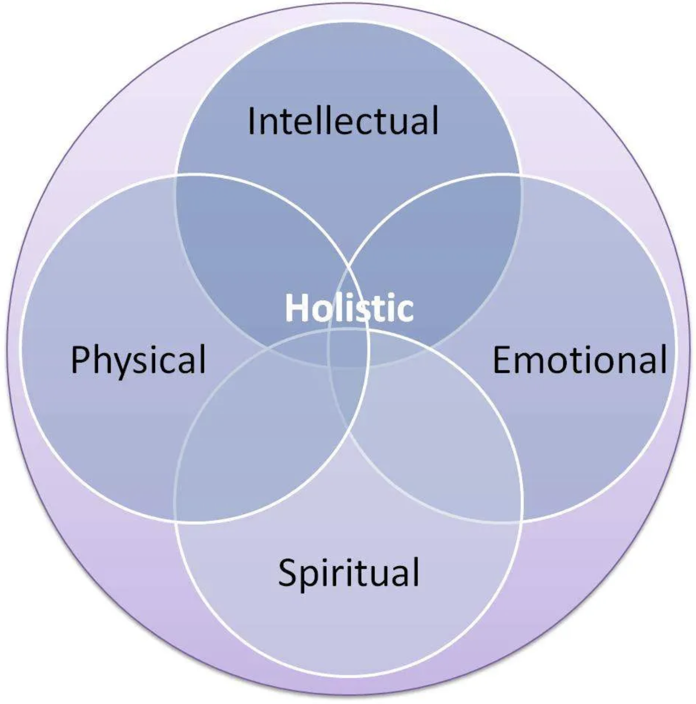

- Physical Wellness: Maintaining good physical health through exercise, nutrition, and preventive care.
- Mental Wellness: Nurturing emotional and psychological well-being through stress management, self-care, and therapy.
- Social Wellness: Cultivating meaningful relationships, social support networks, and a sense of belonging.
- Spiritual Wellness: Finding purpose, meaning, and inner peace through practices such as meditation, mindfulness, and self-reflection.
